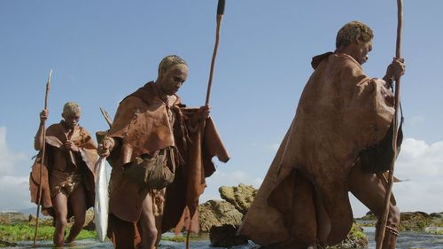
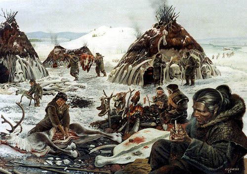
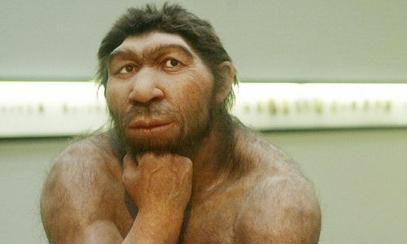
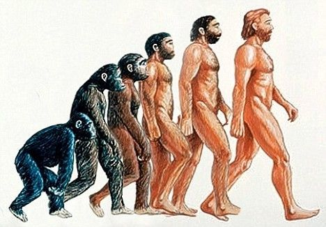
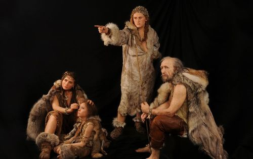
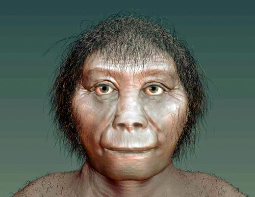

 Homo sapiens, the ancestors of modern man, originated in Africa. The “Out of Africa” theory suggests that our ancestors left the continent and migrated to Europe and Asia.This migration took place approximately 80,000 years ago. What is interesting to note is that the Homo erectus (upright human) had actually followed the exact same route (from Africa to Eurasia) - over 1 million years ago. Looks like Homo sapiens weren't the first to get this idea.
The Human Population Decreased 80,000 Years Ago
 About 80,000 years ago there was a drastic reduction in the size of the human population. Archeologists are still not 100% sure what caused the decline, but it definitely wasn't pretty. Some say there may have been a massive volcanic eruption that filled the sky with millions of particles of ash, blocking the sun’s heat for many years and in so doing created freezing temperatures that would have severely affected life and population growth on earth at the time.
We May Have Neanderthal Genes
 Neanderthals are our closest extinct human relatives. Our well-known, but often misunderstood ancestors lived in Europe and Asia as early as 200,000 years ago until about 30,000 years ago. While the Neanderthals’ appearance was slightly similar to ours, they were shorter and stockier with angled cheekbones, prominent brow ridges, and wide noses. These qualities were important for survival in Europe’s cold climate and in order to hunt big animals for food. Though sometimes thought of as barbarians, scientists have discovered that Neanderthals in fact used tools, buried their dead and had control over fire.
Homo Sapiens Always Evolve
 Human evolution is the extended process of change that suggests humans originated from apelike ancestors. Scientific evidence shows that the physical and behavioral traits shared by all people stemmed from these ancestors and evolved over an extended period of time. Our species, as suggested by many, will continue to evolve in response to our living conditions - different food, geographical and environmental changes, the advent of modern technology and of course the amalgamation of our different races.
Language Skills
 There are some scientists that believe that communication traits and the use of language arose from a common dialect spoken by our ancestors when they were all still in Africa. This language may have been made up of sounds and grunts as opposed to formal words, but were certainly used as a means for instruction and expression. With over 5000 different languages spoken in the world today, this concept is highly likely. Linguists and anthropologists suggest that human language probably started to develop around 100,000 years ago.
We Used to be Hobbits
 A hobbit-like species of humans lived approximately 18,000 years ago, according to Australian and Indonesian researchers. The species lived among pygmy elephants, 10-foot lizards, and were no taller than the average 3-year-old.

 ANCIENT HUMAN HISTORY
ANCIENT HUMAN HISTORY